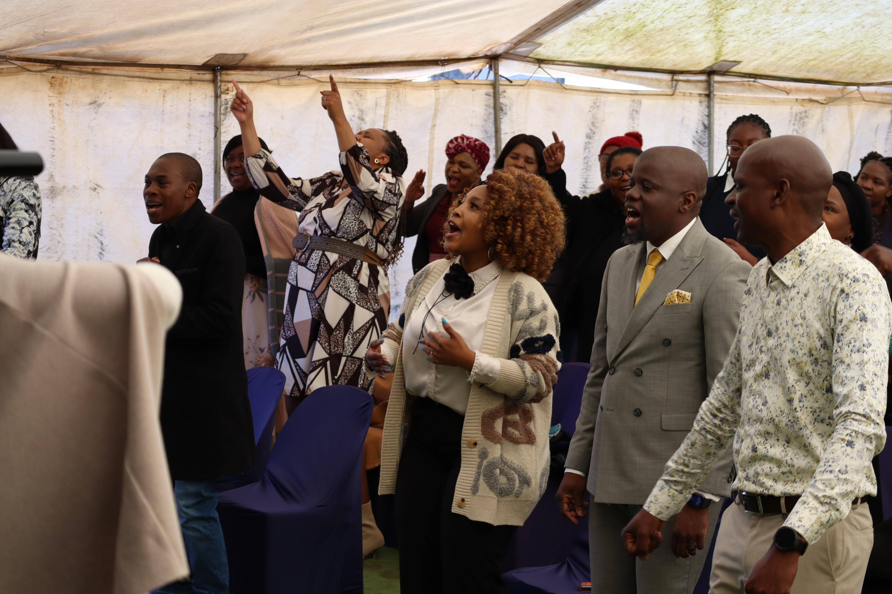
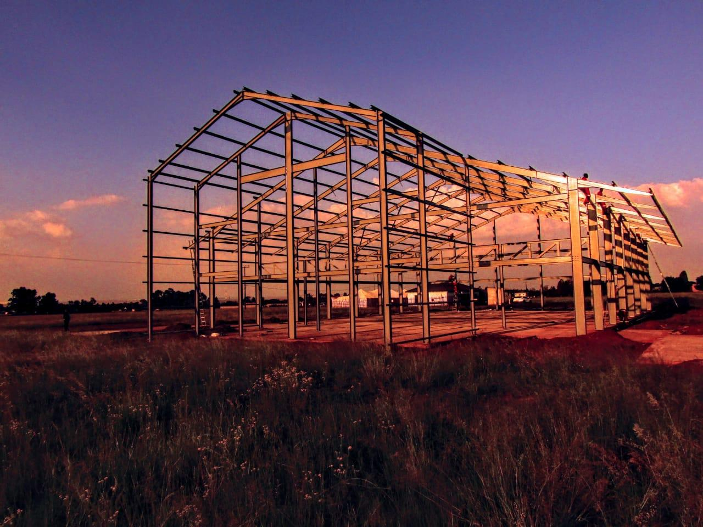

Welcome to Tower of Praise Ministries
Welcome to Tower of Praise Ministries! We are thrilled to have you explore our website and learn more about who we are. Our church is a vibrant community dedicated to empowering individuals and nurturing spiritual growth through the teachings of Christ.
Our History
Tower of Praise Ministries is led by Apostle Moses Phakula and his wife, Mashudu Phakula, who embody a profound commitment to spiritual guidance and exemplary leadership. Established in 2008 under their visionary stewardship, the church has flourished into a dynamic hub of faith and transformation. Apostle Moses and Mashudu are dedicated to nurturing a "HOLY GHOST GENERATION" as envisioned in Galatians 5:24-25, where believers crucify their fleshly desires and walk in the Spirit. Assisting them are a team of seasoned church elders who serve as pastors, teachers, evangelists, and prophets, each bringing unique gifts and perspectives to the ministry. Together, they form a cohesive leadership core, steering the congregation towards spiritual growth, holistic development, and impactful service.
Mission and Values
To be a vibrant community where every person experiences the love of God, grows in faith, and serves others with passion and purpose.
Our vision is to see a world where every Christian embodies the fullness of the Spirit, living out their faith with integrity, purpose, and transformative impact on their communities and beyond.
Our Beliefs

Tower of Praise Ministries is not merely a church; it's a divine blueprint for a world transformed by love, faith, and compassion. Our vision extends far beyond the walls of our sanctuary, reaching into the hearts of individuals, communities, and nations. We envision a future where the promises of Scripture are not just words but living realities, where the sick are healed, the oppressed set free, and the broken made whole. Central to this vision is the establishment of a healing center—a sanctuary of hope and restoration—where the miraculous signs outlined in Mark 16:15-18 become commonplace. Here, the power of God's love transcends barriers of illness, despair, and fear, ushering in a new era of divine intervention and spiritual renewal.
Meet Our Team

Our dedicated team of staff and volunteers work tirelessly to support our church's mission and serve our community. From pastoral leadership to administrative support and outreach coordinators, each member of our team is committed to making a difference.
Feel free to reach out to any of our staff members if you have questions or need assistance. We are here to help and support you on your faith journey.